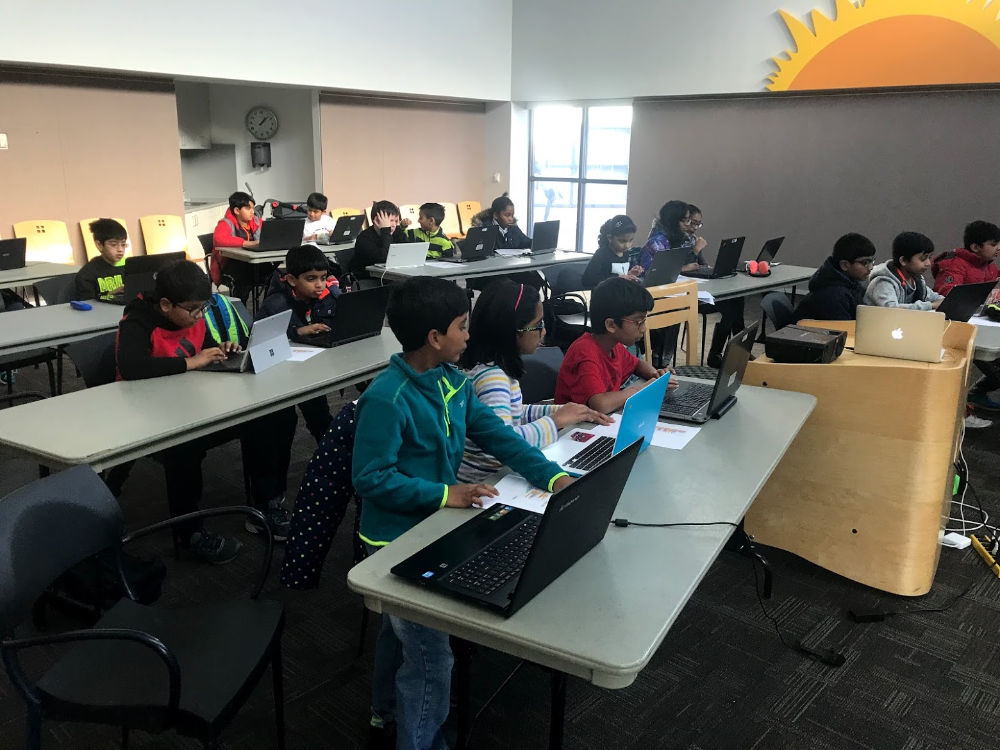
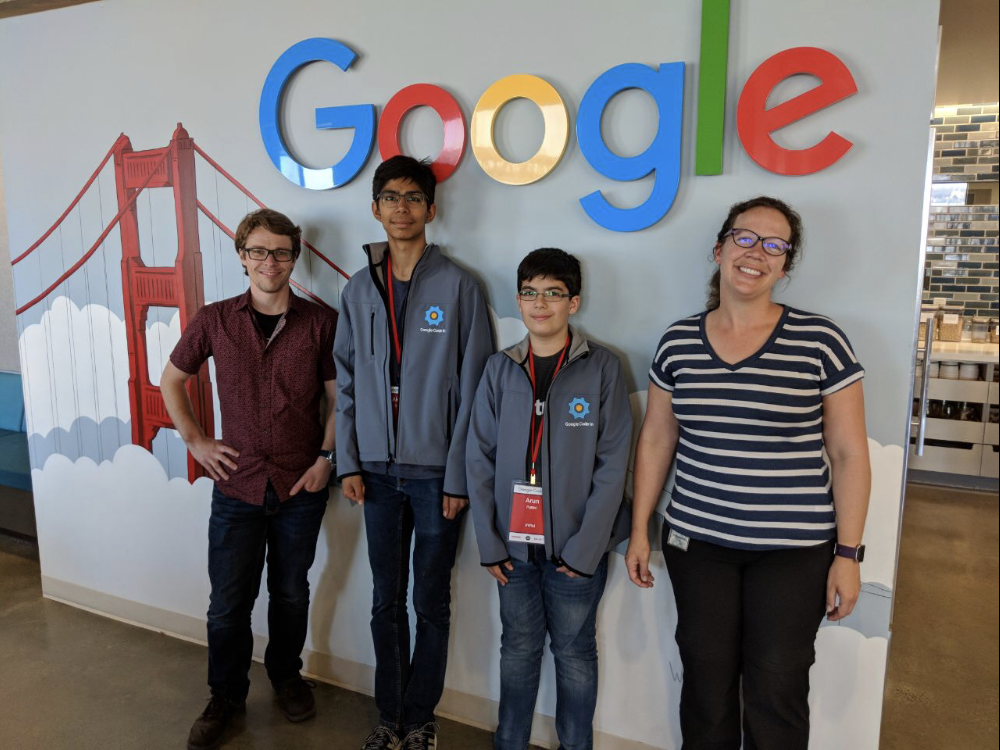
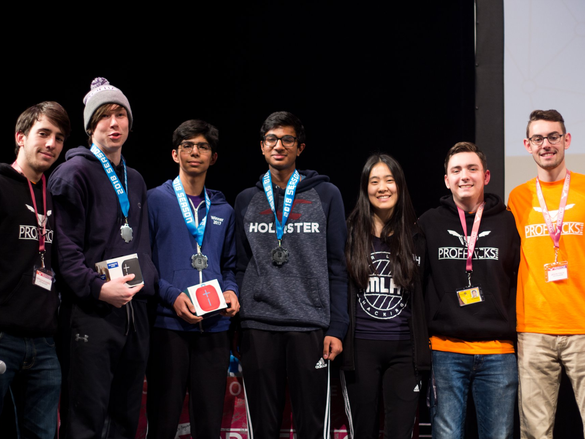
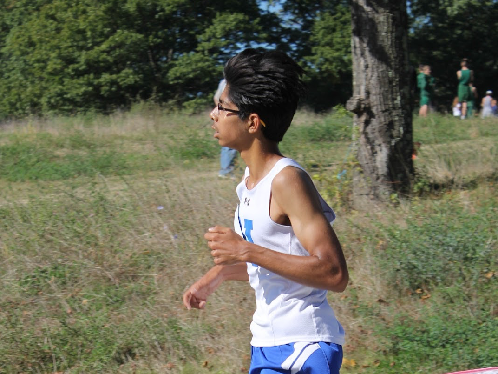
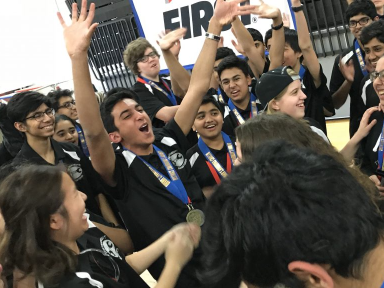
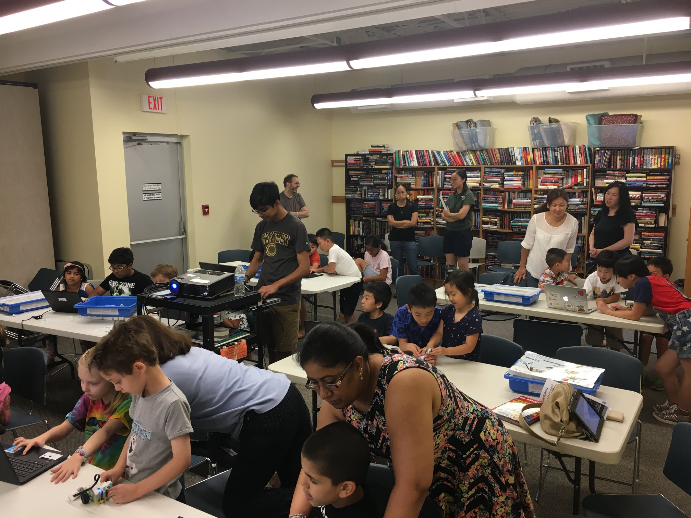

I first began robotics in middle school, where along with a few friends I created lego robots to complete challenges across a board the size of a table. It was my favorite activity all through middle school and so, I knew I had to continue in high school. I joined with the intention of getting to program the 6 foot robot to compete at the world competition but left with much more.
Motivated by my interest in entrepreneurship, I joined the business subteam. Over the past few years, I have lead the business team to win the entrepreneurship award for our work. I manage our $140,000 budget, which we fundraise for and allocate each year. I guide students in writing stellar sponsor letters to businesses; I reach out to local business over the phone and in person for contributions; I manage the finances of our events that cater to 1000+ people.
My first hackathon experience was at ProfHacks, where my team and I created Munch, a platform for restaurants to use their wasted food by selling it at discounted prices. We created an all inclusive system featuring an app for customers, a people counter, a restaurant dashboard and even an Alexa skill! I worked on detecting the people entering and exiting the restaurant using openCV which we integrated with our firebase backend. I also created the Alexa skill for customers to access nearby discounts. In this experience, I worked with technologies perfect for a hackathon setting and we got the 3rd place prize!
Click here to learn more about Munch!PennApps is an international hackathon held at UPenn. Over 1000 hackers join to work on awesome projects that often end up being used in the real world. That said, this time, our team created something a little more fun while learning some new technologies. Our team built Airtunes! AirTunes recognizes 10 different popular dance moves (at any given moment) and generates a corresponding sound. The sounds can be looped and added at various times to create an original song with simple gestures. The user can choose to be one of four different superheroes (Hulk, Superman, Batman, Mr. Incredible) and record their piece with their own personal touch.
For this, we trained a convolutional neural network in Tensorflow with 1000 samples of each gesture, which worked better than manually calculating the angles between the hands and head. The model works with 98% accuracy on the test data set. As for the UI, we designed it using the kivy library in python. There, we added record functionality, the ability to choose the music and the superhero overlay, which was done with the use of dlib and opencv to detect facial features and map a static image over these features.
Click here to learn more about AirTunes!The Alexa Skills Challenge was my introduction to Alexa and AWS in general. I built a skill called TestQuest. TestQuest allows students and parents an easy way to access standardized test information. It features a variety of intents ranging from asking for a deadline for a specific test to asking for test date recommendations based on your goal score.
For this, I built a web scraper to scrape data from the collegeboard and act websites so that I don't have to manually feed in the dates. Then, I stored this data in DynamoDB so it is accesible to each user and can be updated. I also experimented with different states and through this, I created a conversation flow rather than a simple question and answer app.
Click here to view my submission!Our team created an informative website for the TSA Competition. It is fully responsive and features many complex elements and yet, it is designed with core simplicity and intuitive navigation.
Click here to view the website!I recently had my first significant experience with open source through a competition called Google Code-In. This is an international competition open to all high school students where you work with one of their partner organizations to support them with their development and live projects. I worked with an organization called XWiki which is a software platform used by both individuals and organizations to enhance internal knowledge sharing.
In my first few tasks, I scoured the Jira (bug tracking platform) issues and developed skills reading and debugging code. I then tackled writing unit tests, eventually moving up to large projects. In all my experiences, I developed the skills to rapidly identify faults in code and create working applications. The company was based in Europe and so, I had to adjust to their time zone. I was loving the work and intended to win, so I spent entire days over a two month period on working with my mentors on new projects. Here, I gained collaboration skills and learned to work with people I hadn’t met before.
I took on this challenge because of a thirst for learning. I instantly recognized, correctly, that this competition would be an amazing learning experience for me, and so, I was willing to sacrifice all my time to improve my skills. As a testament to my learning, I was awarded the Grand Prize Trip to Google HQ! Google Code-In opened the doors to new opportunities, introducing me to the world of open source. I now contribute to open-source in my free time and even have my own open source project.
Learn more about Google Code In!In the summer of 2018, I worked as the teacher at STEAMWorks, a company that hosts STEM programs for students of all ages, which in the summer means summer camps. I taught classes ranging from woodworking to lego robotics, picking up new skills myself in the process. I worked in an intensive environment, as I had to learn new activities the week before I was teaching them. This environment helped me boost my own know-how. Prior to STEAMWorks, I had never 3d printed a chess set, built and painted a wooden birdhouse, soldered together a mini-bicycle.
It also gave me an opportunity of managing large groups of 15 to 20 students of various age groups, running 3 different lessons at the same time. I used this opportunity to spread STEM in the community, reaching new students every week.
Here is our website!This one is pretty long so here is a TL;DR: I ran sprinting in track → got moved to distance running → joined xc and broke 5 minutes in the mile
My freshman year of high school, in an attempt to remain active, I hesitantly signed up for Spring Track. The first season went well. I ran the 400m dash that I used to dread 3-4 times over the course of the season. I didn’t get to run in too many meets. Still, my goal of staying fit was in motion. Sophomore year, I joined track early in the winter and continued through the spring as a sprinter. I was still running the 400m and the 400m relays and I still longed for once in a while opportunities for running a shorter 200m race.
Then everything changed.
My nonchalant attitude caught up to me and Coach Gould gave me two options: either be kicked out of the team or join the distance crew. I knew I wanted to continue to be a part of the team so I joined the distance team, and then began my real journey in track. I was terrified of the distance workouts. They were known to do their own workout, and then do what the sprinters did right after to maintain their speed.
After training for about a week, I had my first race. It was the first time I did not jog the mile, the first time I sprinted not just to the finish, but during parts of each lap. I went from running 7 minutes in the mile to running 5:30.
There was no stopping me from there. I knew I had to break 5 minutes and earn the “sub-club” title. And so, I signed up for cross country.
Cross country was another obstacle in itself. Some races, I would be standing at the start, already having given up. In those races, I would run high 20 minute 5k’s. One of the first lessons I learned from Coach Gould was to imagine yourself achieving your goals in vivid detail. After I heard that, I gave up on giving up. And instead, I would take out half an hour or so to meticulously plan and then visualize my race. It may sound silly, and you may approach running with a “Just do it” attitude but this method may have single handedly transformed my dream of breaking 5 minutes in the mile to a reality (spoiler alert).
Coming into Spring track, I was nowhere near my 5 minute goal. I had figured dropping 30 seconds in a year should be a piece of cake. A piece of rotten, spoiled cake, perhaps. I had actually gotten slower than last year. My first few races, I ran in the 5:40’s. I knew I needed to make some changes.
I began logging my workouts in detail, leaving tidbits on how I could improve in the next one. I completed “dream miles” (1600m split up with rest) with teammates who I knew were faster than me. I remembered the method of visualizing races that I had conveniently forgotten when I was bombarded with work.
And in the second last race of the season, I ran a 5:04. I had visualized a sub 5 race, and pretty much ran the splits that I wanted to, except for one moment when I gave up. In the second lap, I tripped and fell because of the crowd in the race, and for about 5 seconds, I convinced myself that I wouldn’t be able to break 5.
For the final race, I visualized myself tripping. I saw myself persevere even when I fell down. And that was my moment! 4:57!
Track was influential because it sparked a period of personal growth. I saw concrete results from the work that I put in, which provided incredible motivation. In that personal growth, however, I found interests that I have come to value more than track, such as spreading technology through teaching and creating software that has a real world impact, so I did not run cross country this year.
Here is my milesplit page!Two years ago, I began teaching programming concepts to young students at the Trenton library. Project Code, as we call it now, has now expanded and become a very significant and core part of my life.
In my first session of 12 classes, I realized the pure joy I receive when helping students reach their “aha” moments. It doesn’t reward me with the transactional happiness that we get from doing “work”, rather, for that one hour every Saturday, it puts me in an overall state of immediate bliss seeing the young minds discover themselves.
Project Code has become the project I am most passionate about for two reasons. First, it has a huge impact on students from all across the state. Second, it is where I go to escape from the stresses of daily life.
Since my first class two years ago, I have grown Project Code to 5 libraries in New Jersey, where we have run the program multiple times (in sessions of 12 weeks) because of more and more parents who find value in the work that we are doing. I continue to teach one class every Saturday, and now, I have begun delegating libraries to generous volunteers by providing them with the training necessary to run a chapter, involving the actual programming involved as well as the process of reaching out to a library and convincing them to run our program.
Learn more about Project CodeIn the summer of 2017, I directed a camp to give students from ages 6-10 an introduction to lego robotics. I ran two three-week half day sessions, in which I wrote the curriculum for the camps, managed the teachers (while sometimes teaching myself), and recruited new students to join the camps.
Last year, I was the head coach for a middle school robotics team, which is usually led by adults. I coached 8 students and encouraged strong core values such as teamwork. With my efforts, the team transformed from a divided group of fighting teenagers to 8 united kids who came to love working with each other. I led this transformation by having team bonding activities where they had to work with each other to complete a mini-challenge and by encouraging them to discuss positive aspects about their team members and what they did well at the end of each meeting. As a unit, the team accomplished 6 different missions across the robot board, created a project on water purification of a dangerous form of Chromium VI, and most significantly, earned a “Core Values” award because of their internalization of my lessons.
Because of my experience watching the students grow over the course of the three months, I am coaching another robotics team this year in hopes of accomplishing similar results.
ParentSquare serves as a 21st Century School-Home Communication Platform. Their mission is to better connect schools with families to improve student outcomes and school success.
On my first day, I was assigned the monotonous task of reformatting an Excel sheet. The task left me feeling underutilized, but over the course of the internship, I completed work that had a direct impact on the ParentSquare community. I tested the entirety of the android app, suggesting improvements and new features that are now being used by over 2,000 schools. In alignment with testing the android app, I wrote automatic tests for the website, which verify if every feature works when modifications are made, eliminating the need for manual testing. My most important project was localizing the website to other languages, which did not involve actually translating the text, but rather making it possible to write a simple translation key instead of rewriting the code in a new language. This project had the most significant impact: it made ParentSquare accessible to the 20% hispanic parents who, prior to my work, were not able to significantly engage with the software.
My experience at ParentSquare was enlightening. It was the first time that I realized that technology was not just something that fascinated me, it was something that could be used to significantly benefit our community. Since then, I have focused on using technology to better the lives of students, as that is where I feel I can have the most impact.
Achievable is a silicon valley based startup helping prospective stock brokers prepare for the Series 7 exam that is mandatory for entering the field. It is a complete learning solution that leverages big data to offer the kind of personalized learning that textbooks cannot provide.
In the summer of 2018, I worked on creating their cross platform app. Working through the 9 weeks, I added essential features such as the Signup/Login pages and the Learning App, integrating everything with the backend server. I also began to add optimizations and many useful user statistics and at the end of the 9 weeks, I have created an experience much smoother than the outdated website. Over the course of the internship, I wrote 3,000 new lines of code, and edited another 11,000. Due to my work on the app, Achievable is now in the user testing phase and is scheduled to release in the next couple months.